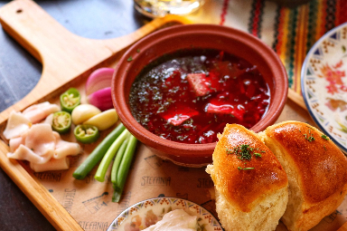

HISTORY: borscht, also spelled borsch, borsht, or bortsch, is a beet soup of the Slavic countries. Although borscht is important in Eastern European cuisines, Ukraine is frequently cited as its place of origin. It is said in Ukrainian legend that borscht came to be in the late 19th century to Zaporozhian Cossacks, serving in the Polish army, on their way to break the siege of Vienna in 1683, or to Don Cossacks, serving in the Russian army, while laying siege to Azov in 1695. This is a very popular dish to Ukraine as burgers are the the U.S.A.
Borscht comes from the Slavic word for the cow parsnip, or common hogweed (Heracleum sphondylium).This dish can be made many ways with it's flexabilty for ingrediants,. The only ingrediant that is always needed is beet root, but other then that its up to the person making it. The most traditional topings are sour cream, potatos, carrots, meat, bonestock, tomatos, cabbage, salo, and viniger. It can also be eaten hot or cold.
here i will be listing my familys recipe, that my grandmother made before she migrated to the US after the war
TetyanaUs,ukrainan-food-borscht-soup,
( https://cdn.pixabay.com/photo/2022/07/15/18/41/ukrainian-food-7323773_1280.jpg )
this is part of a video on how to make borscht
site sorces:
allrecipes, patti, July 20, 2023, link:https://www.allrecipes.com/recipe/84450/ukrainian-red-borscht-soup/